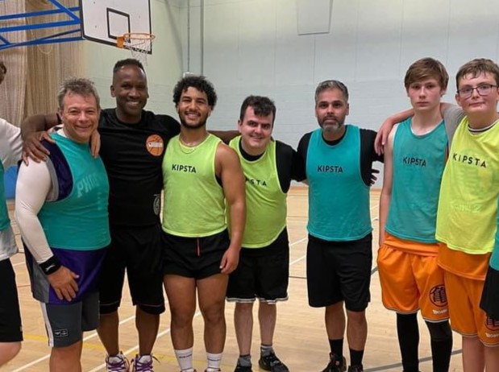
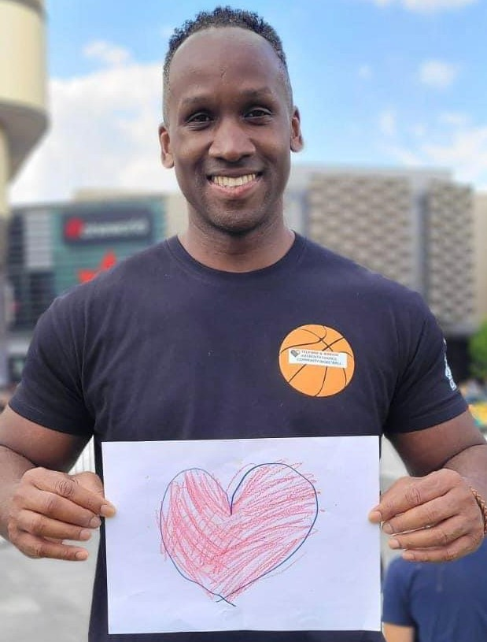

Who are we?
Telford Interfaith Community Basketball Initiative is a unique initiative that brings people together
through the shared love of basketball. Open to male and female participants aged 16 and older, we provide
a fun and welcoming space where individuals from all backgrounds, faiths, and cultures can connect, play,
and grow as a community.

Our goal
Our goal is to promote health, well-being, and unity by creating an inclusive environment where everyone
feels valued. So, whether you're an experienced player or just looking to try something new, our weekly
sessions and events are designed to build teamwork, friendships, and mutual understanding.

Our Values
We believe basketball is more than a game—it's a way to bridge differences, celebrate diversity, and
strengthen community bonds. Join us on the court to stay active, meet new people, and be part of something
truly special in Telford. Together, we thrive!

The Founder
Dr. Hezron started Telford Interfaith Community Basketball in 2019 as a small group that aimed to bring people from
different faiths, backgrounds, and cultures together. Since starting TIC Basketball, Dr. Hezron has taken it upon himself to
provide a safe space for every single member of TIC Basketball, providing care, advice, and taking a personal interest
in all TIC members' lives. Dr. Hezron filled the role of brother, mentor, father, and friend for all TIC members, celebrating
their successes and consoling them in their grief. Dr. Hezron's feat can only be described as phenomenal, and it is thanks to him that
TIC Basketball can call themselves a family.